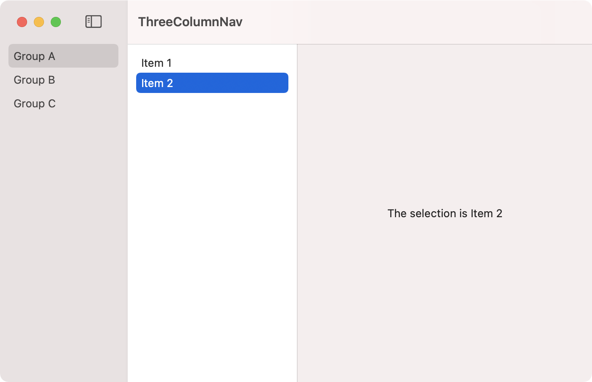

A three column NavigationView is created using a similar approach as the two column NavigationView. The middle column has a fixed minimum width of 200 but the frame's minWidth can be specified with a value greater than 200.

import SwiftUI
struct Group {
let name: String
let items: [String]
}
let groups = [
Group(name: "Group A", items: ["Item 1", "Item 2"]),
Group(name: "Group B", items: ["Item 3"]),
Group(name: "Group C", items: ["Item 4", "Item 5", "Item 6"])
]
struct Sidebar: View {
@State private var selection: String?
var body: some View {
List(groups, id: \.self.name) { group in
NavigationLink(group.name, destination: Itembar(items: group.items), tag: group.name, selection: $selection)
}
.frame(minWidth: 150)
.listStyle(SidebarListStyle())
.toolbar {
Button(
action: {
NSApp.keyWindow?.contentViewController?.tryToPerform(#selector(NSSplitViewController.toggleSidebar(_:)), with: nil)
}, label: {
Label("Toggle sidebar", systemImage: "sidebar.left")
})
}
}
}
struct Itembar: View {
let items: [String]
@State private var selection: String?
var body: some View {
List(items, id: \.self) { item in
NavigationLink(item, destination: DetailView(detailText: item), tag: item, selection: $selection)
}
}
}
struct DetailView: View {
let detailText: String
var body: some View {
Text("The selection is \(detailText)")
}
}
struct ContentView: View {
var body: some View {
NavigationView {
Sidebar()
Text("Select a Group")
Text("Select an Item")
}
.frame(width: 700, height: 400)
}
}
struct ContentView_Previews: PreviewProvider {
static var previews: some View {
ContentView()
}
}
Swift Programming for macOS © 2025
Built with Genja by Gavin Wiggins